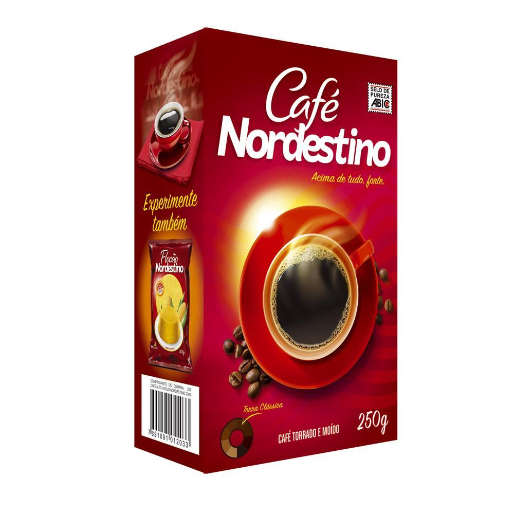

A Mulligan foi convidada pela São Braz, empresa com mais de 62 anos de tradição em torrefação e distribuição de alimentos e uma das mais populares da região Nordeste do país, para revitalizar um de seus principais produtos: o Café Nordestino.
O resultado foi um revamp completo, no qual foi possível aumentar o valor agregado ao produto sem que ele perdesse seu apelo popular. O layout foi construído de maneira que a composição se tornasse mais clean, leve e equilibrada, mas que também atraísse o olhar do consumidor com um appetite-appeal forte e instigante.